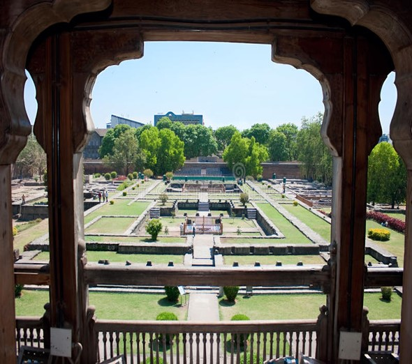

Shaniwarwada, once the seat of the Peshwa governance in Pune is a 286-year-old mansion and is one of the finest examples of architecture in the city. It is now one of the most popular tourist destinations in Maharashtra. This grand mansion was built by the Peshwa Bajirao I himself as the residence of the Peshwas. Although the Wada currently covers an area of 625 acres, in its heyday it covered almost the entire area of the city itself. The place never fails to amaze the visitor with its various forts and fountain, and the majestic statue of Baji Rao I that greets the visitor at the entrance of the palace. The Delhi Darwaza is the main gate of the complex, and faces north towards Delhi. Infact, Shaniwar Wada is the only fort structure in India to have its main gate facing Delhi, the mideaval imperial capital of Mughal Empire. Even Chhatrapati Shahu is said to have considered the north-facing fort an indication of Baji Rao's ambitions against the Mughal .
Timing : 9:30am–5pm weekdays, closed on Sunday
